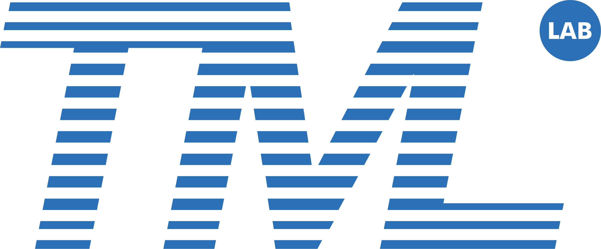

Venue: F19.03.315 Eastern Avenue Lecture Theatre 315 at the University of Sydney, 7-8 July 2025.
Sydney - RIKEN AIP Joint AI Workshop
Overview
The machine learning community is developing very fast. Efficient and effective communication is essential for exchanging ideas, building collaborations, and conducting impactful research, etc. This regional workshop aims to bring together some machine learning researchers to facilitate communication. In this workshop, we propose to showcase a variety of recent advances from presenters, with three emphases, i.e., (1) exchanging ideas; (2) inspiring the juniors to do better research; (3) promoting potential collaborations.
Program
To be announced.
List of Speakers
Masashi Sugiyama (RIKEN AIP)
Mihoko Otake (RIKEN AIP)
Benjamin Heinzerling (RIKEN AIP)
Gang Niu (RIKEN AIP)
Takashi Ishida (RIKEN AIP)
Wei Huang (RIKEN AIP)
Sherief Hashima (RIKEN AIP)
Okan Koc (RIKEN AIP)
Xin-Qiang Cai (RIKEN AIP)
Zhen-Yu Zhang (RIKEN AIP)
Ming-Kun Xie (RIKEN AIP)
Haonan Huang (RIKEN AIP)
Mingyuan Bai (RIKEN AIP)
Yuning Qiu (RIKEN AIP)
Clifford Broni-Bediako (RIKEN AIP)
Van-Quang Nguyen (RIKEN AIP)
Andi Han (RIKEN AIP & USYD)
Wei Wang (RIKEN AIP)
Yuting Tang (RIKEN AIP)
Eshant English(RIKEN AIP)
Alexander Soen (RIKEN AIP & ANU & Google)
Joseph Davis (USYD)
Clement Canonne (USYD)
Yu Yao (USYD)
Chang Xu (USYD)
Joy Qiping Yang (USYD)
Aditya Vikram Singh (USYD)
Ziming Hong (USYD)
Suqin Yuan (USYD)
Zhuo Huang (USYD)
Junbin Gao (USYD)
Yiming Ying (USYD)
Hongwei Wen (USYD)
Ling Chen (UTS)
Guodong Long (UTS)
Zhen Fang (UTS)
Maoying Qiao (UTS)
Workshop Co-chairs
A/Prof Tongliang Liu; University of Sydney
Dr Gang Niu; RIKEN
Prof Ling Chen; University Technology Sydney
Prof Masashi Sugiyama; RIKEN / University of Tokyo
Sponsors
